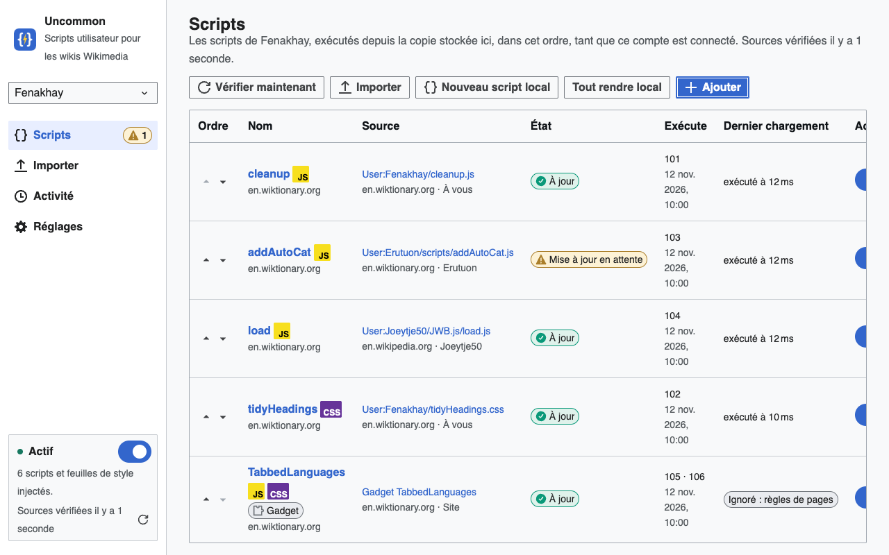
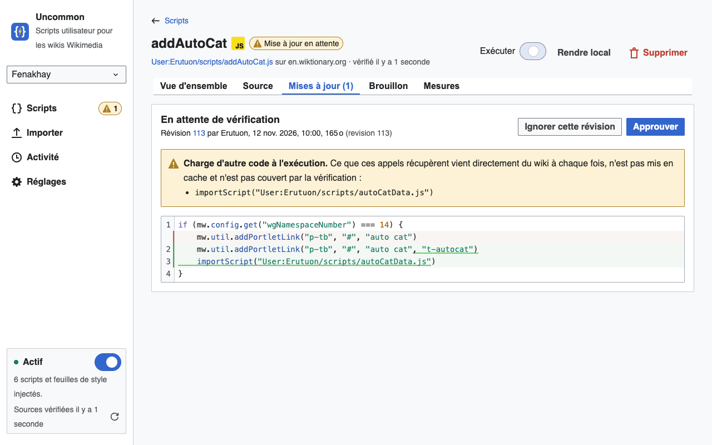

Installer
Bientôt sur le Chrome Web Store et Firefox Add-ons.
Uncommon exécute vos scripts utilisateur et vos feuilles de style Wikimedia depuis une copie gardée dans votre navigateur, à la place de votre common.js.
Un script chargé depuis common.js attend, à chaque affichage de page, une chaîne de requêtes : la page, le module de démarrage, le module user, puis une requête de plus pour chaque importScript. Uncommon garde le texte de chaque script dans le navigateur, qui l'injecte avant les scripts de la page. Le script n'attend que ce dont il a besoin dans la page, et aucune requête n'est faite pour le script lui-même.
- Profils : un pour chaque compte wiki. Les scripts d'un profil ne s'exécutent que lorsque ce compte est connecté, sur les wikis de votre choix : un, plusieurs ou tous les wikis Wikimedia.
- Importation : lit votre common.js, common.css, global.js ou global.css, liste chaque page qu'il charge et ajoute celles que vous choisissez.
- Mises à jour : vos propres pages suivent le wiki à chaque enregistrement. Une révision d'un autre contributeur attend que vous ayez lu son diff et l'ayez approuvée ; la révision approuvée continue de s'exécuter en attendant.
- Gadgets : ajoutez un gadget de votre wiki d'attache comme un seul enregistrement, avec ses scripts et ses styles.
- Brouillons : essayez un changement dans le navigateur avant de l'enregistrer sur le wiki.
- Règles de pages : n'exécutez un script que dans certains espaces de noms, actions, pages spéciales ou modèles de contenu.
- Activité : voyez quand chaque script s'est exécuté sur les 200 derniers chargements de page, et pourquoi l'un d'eux a été ignoré ou a échoué.
Seules les sous-pages User: et les pages MediaWiki: peuvent être ajoutées : des pages que seuls leur propriétaire ou les administrateurs du wiki peuvent modifier. Uncommon lit l'API Action des wikis de façon anonyme, et rien d'autre. Il ne modifie jamais un wiki et n'envoie rien nulle part : vos scripts, vos réglages et vos rapports restent dans votre navigateur.
Avant de pouvoir exécuter des scripts, votre navigateur vous demande d'autoriser les scripts utilisateur. Dans Chrome et Edge, activez « Autoriser les scripts utilisateur » sur la page de détails de l'extension ; dans Firefox, choisissez Autoriser sur le tableau de bord. Le tableau de bord montre les étapes.
Uncommon est disponible en anglais, français, arabe, allemand, néerlandais et maltais.

